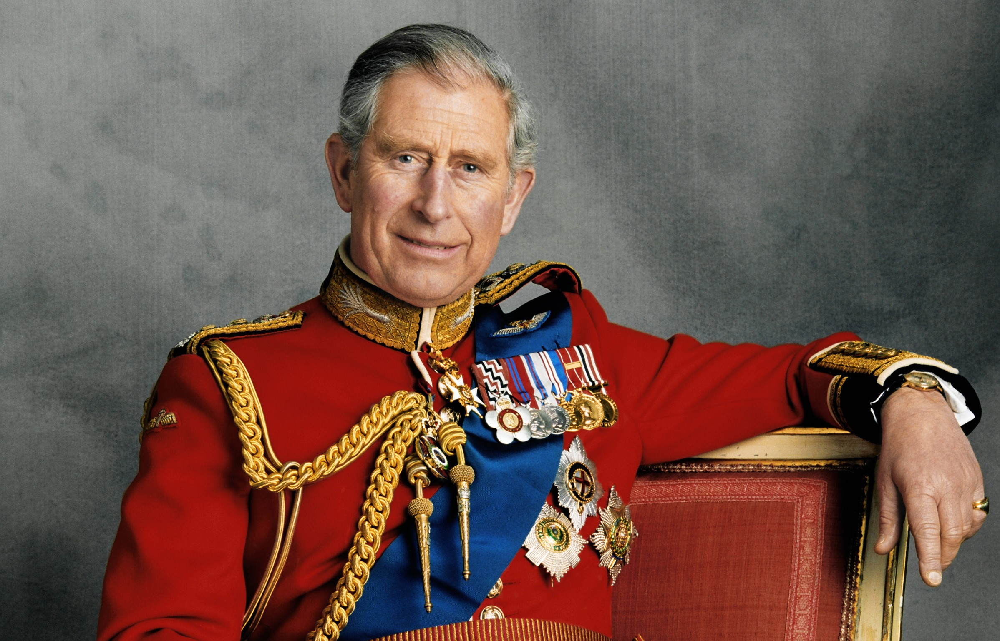

Принц Чальз стал монархом Великобритании
 Новому королю 73 года, и почти 70 из них он готовился примерить корону.Накануне, 8 августа, скончалась королева Британии Елизавета II. Брозды правления взля в руки её сын Чарльз. Коронация состоялась в Сент-Джеймсском дворце в Лондоне.Прокламацию об официальном провозглашении подписали ряд высокопоставленных лиц, в том числе принц Уильям, королева-консорт, лорд-председатель Совета престолонаследия Пенни Мордонт, архиепископ Кентерберийский и другие. В последний раз Совет по престолонаследию собирался в феврале 1952 г. для возведения на трон Елизаветы II, тогда на мероприятии присутствовало около 200 человек.
Карл III произнес традиционную клятву в ходе церемонии его провозглашения королем и подтвердил, что продолжит традицию передачи части доходов короны британскому государству в обмен на суверенный грант.
Карл III назвал правление своей матери королевы Елизаветы II «непревзойденным по своей продолжительности, самоотверженности и преданности»
Я глубоко осознаю это великое наследство и обязанности и тяжелую ответственность суверенитета, которые теперь перешли ко мне. Принимая на себя эти обязанности, я буду стремиться следовать вдохновляющему примеру, который я подал в поддержании конституционного правления, и стремиться к миру, гармонии и процветанию народов этих островов и королевств и территорий Содружества во всем мире.